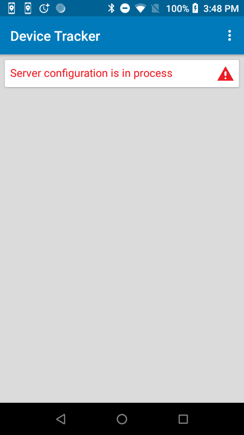
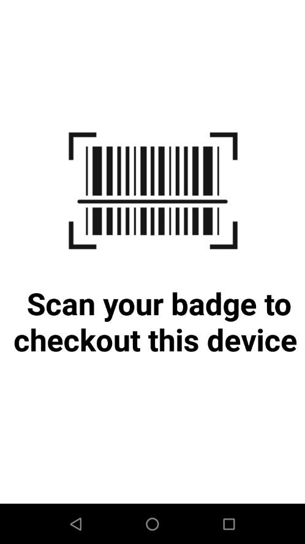
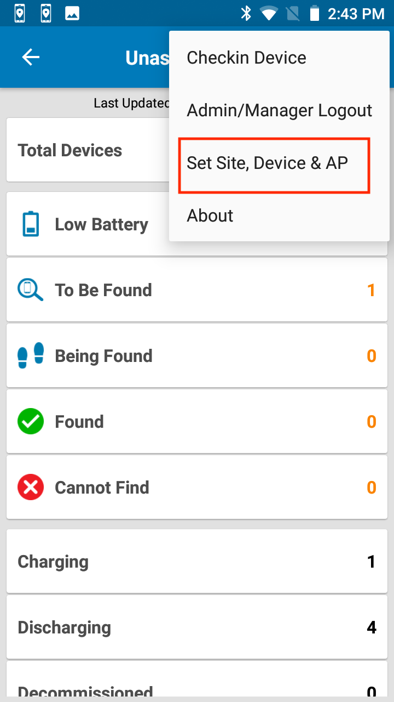
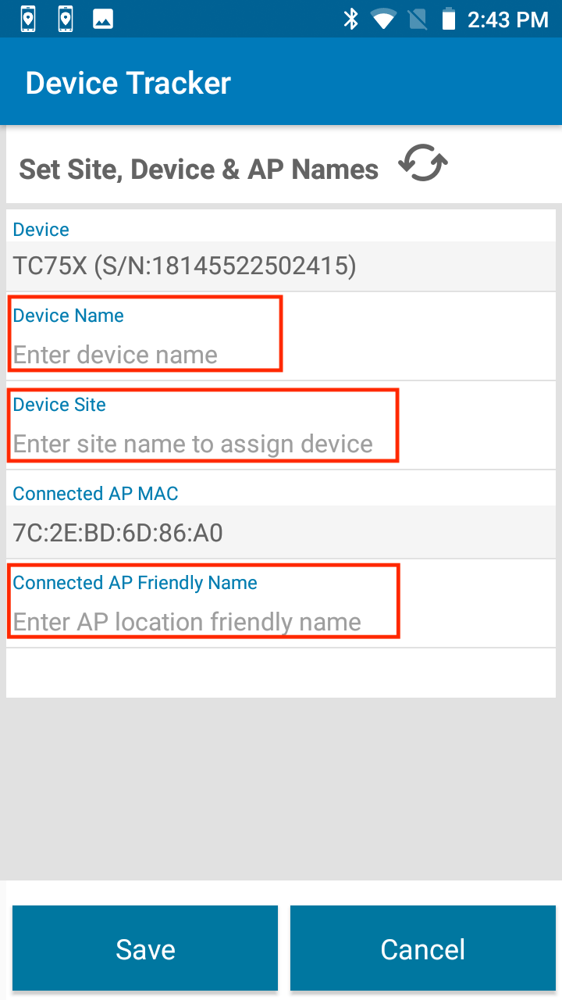
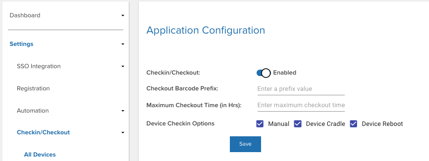
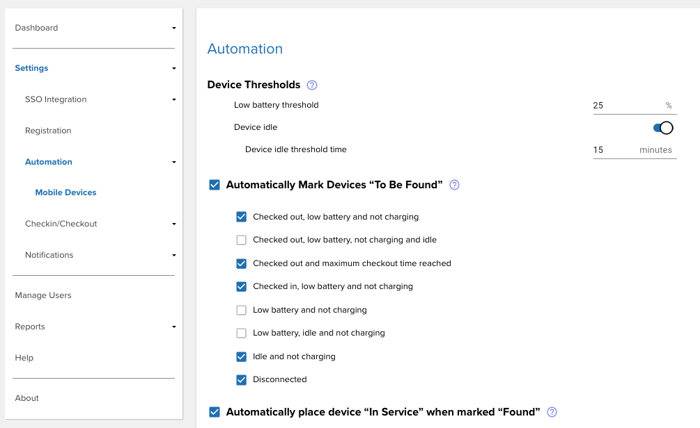

FOR INTERNAL ZEBRA USE ONLY - DO NOT DISTRIBUTE
Overview
Device Tracker is a cloud-based scalable solution that makes it easy to track and recover lost or misplaced devices, preventing device inventory shrinkage. No additional hardware is required - leverage existing Wi-Fi network infrastructure along with Bluetooth and audio to locate devices. When locating a device, Device Tracker identifies the general vicinity of the lost device based on the Access Point (AP) it is connected to within the facility. The visual proximity indicator shows in real-time how close or far the lost device is located, relying on Bluetooth beacon transmissions. If the device is not within line-of-site, an alarm can be remotely triggered on the device to further determine its precise location.
Video: Overview of Device Tracker
Main Features
Main features of Device Tracker:
- Cloud-based scalable solution hosted and maintained by Zebra with support for up to 100K devices in multiple locations.
- Support for central administrator, site manager, and site associate roles.
- The web portal provides a corporate-level dashboard for administrators and site-level dashboard for managers to monitor and track devices.
- Registration of:
- Sites and access points with friendly names to easily identify device location.
- Devices to assigned site with user friendly names for simple device identification.
- Simple to deploy – install and configure the mobile application using StageNow and Enterprise Mobility Management tools.
- Easily find a misplaced device with the connected AP location, the Bluetooth-based visual proximity indicator and play sound feature.
- Locate a device even when that device is powered off (for a limited time) if it has secondary Bluetooth Low Energy (BLE) beaconing capability.
- Checkout feature to associate users to devices for accountability.
- Single Sign On (SSO) support for users to be authenticated with SSO credentials.
- Generate reports to monitor device performance, user activity and site activity.
- Automate workflows to ease the process of finding and tracking devices.
- Automatically receive notifications from lost devices in close proximity via audio, vibrating or LED alerts.
New in Device Tracker 5.2
- New Lost Device Nearby feature automatically sends notification messages (with audio, vibrating, or LED alerts) to any device located in close proximity of a lost device.
Get Started
Contact David Singer for access to the dogfooding system. Device and network requirements must be met prior to installation. See Device Tracker Download & Support for device compatibility.
Reset Password
The password must be reset for first-time use. Your Zebra email ID is used for the user name.
See Reset Password for instructions.
Install & Setup
To install and configure Device Tracker client app:
- Connect the device to the internet via Wi-Fi.
- Launch the StageNow client.
- Scan the barcode provided here. After the client app is installed, the screen below appears while the server configuration is taking place (may take more than 10 seconds to complete), followed by the Checkout screen blocking device access. This confirms the server connection is established and the client app is ready for use.
  Server configuring after install. Checkout block access screen. - Scan any barcode to remove the screen - this is not configurable in the demo and appears each time the device is connected to external power.
- Login. Tap on the options menu at the top-right and select Admin/Manager Login. Enter your user credentials.
- Register your devices and access points. This feature is available only in the Dogfooding instance as an alternative to CSV upload or manual entry:
a. Enter your site name. This must match the site name assigned to you for demo use.
b. Optionally, provide a friendly name for each device. For example, “Ken’s Device”.
c. Provide the location friendly name for each access point MAC address used for the Wi-Fi connection. For example, “Electronics” as a friendly name for the access point near the Electronics department. To register friendly names for multiple access points, go to each access point area for the device to connect, click on refresh and register the friendly name.  Tap Set Site, Device & AP Enter device name (optional), site, and AP friendly name
User Guide
For Zebra Internal Use Only - Do Not Distribute.
Refer to the pre-released Device Tracker documentation, subject to change.
Server Configuration
By default, most dogfooding participants are granted manager access. As managers, server configuration is not visible. This section displays the current server configuration that can affect Device Tracker operation.
Checkin/Checkout configuration:

Automation configuration:

Feedback
Fill out the form below to provide your feedback: